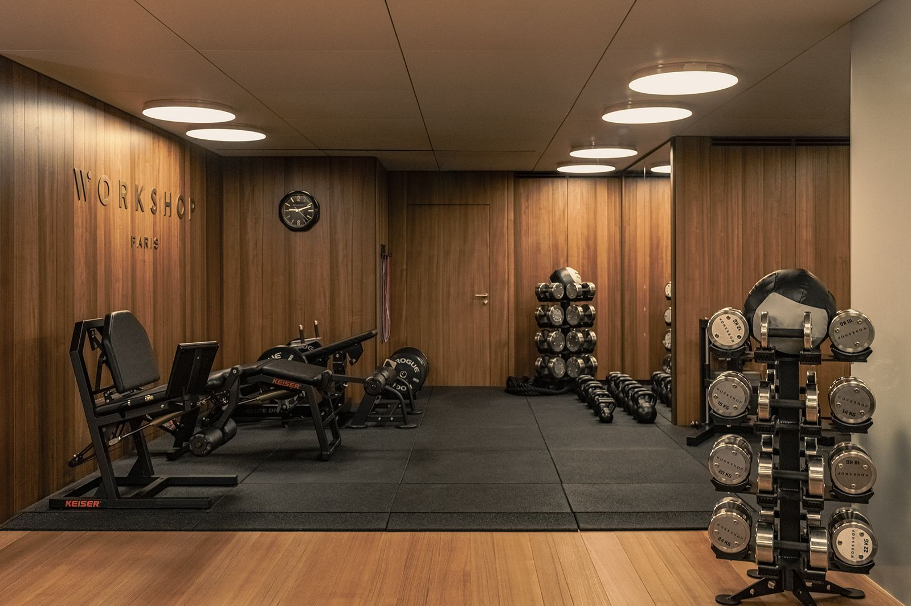

Programme Débutant

Le programme débutant est conçu pour ceux qui souhaitent se lancer dans le monde du fitness et du bien-être. Que vous soyez totalement novice ou que vous repreniez après une longue pause, ce programme vous guidera pas à pas.
Ce que vous allez apprendre :
- Les bases des mouvements de fitness (squats, pompes, gainage, etc.).
- Des exercices adaptés à votre niveau et facilement réalisables à la maison.
- Un suivi progressif pour développer votre endurance et votre force.
Avantages :
Grâce à ce programme, vous bénéficierez d’un suivi personnalisé, de conseils nutritionnels de base, et d’un accès à notre communauté motivante.
Voir les tarifs